The chess board has 64 "boxes" (or "houses"), 32 light and 32 dark, and is oriented so that there is a light box at the bottom right, as shown in the figure .
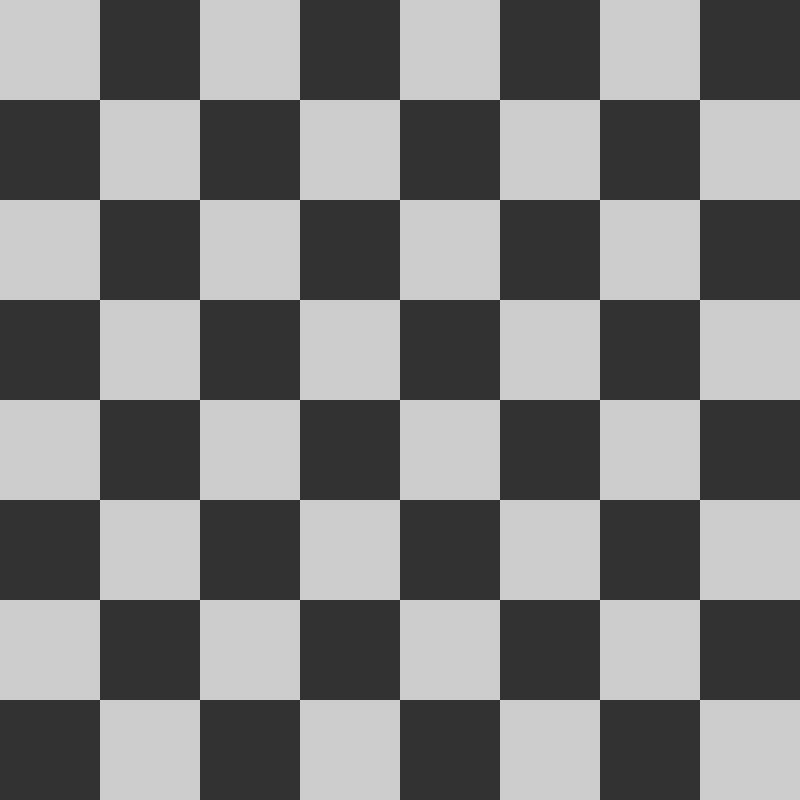The initial arrangement of the pieces is the one reproduced in the image below. The white queen is in a light square, the black queen in a dark square. It is played in two. Players take turns. Each player has only one move per turn. White starts.
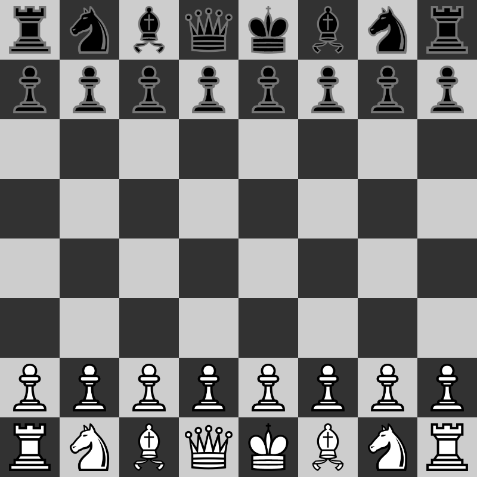Each chess piece moves in precise ways. No piece can go to occupy a square where there is another piece of the same alignment, it can instead move to a square occupied by an opposing piece, in this case making a "capture", i.e. eliminating the opposing piece from the board and taking its place.
The rook moves to any square in the same row or column it is in, provided that there are no pieces (allies or opponents) between the arrival and departure squares and provided that the arrival square is not occupied by a piece of the same alignment.
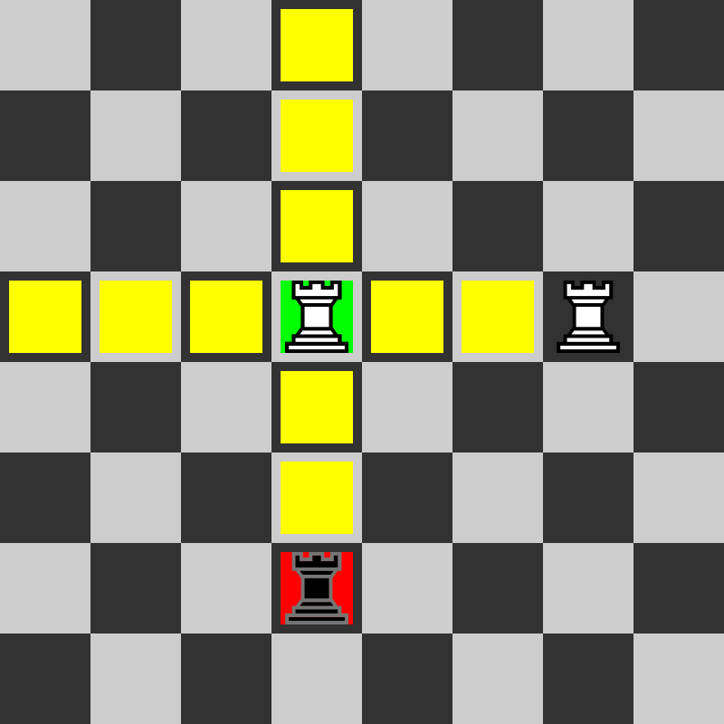The bishop moves to any square on the same diagonals as it is, provided that there are no pieces (allies or opponents) between the arrival and departure squares and provided that the arrival square is not occupied by a piece of the same alignment. The bishop never changes the color of the squares in which it moves, for this reason it can be said that each player at the beginning of the game has a light field bishop and a dark field bishop.
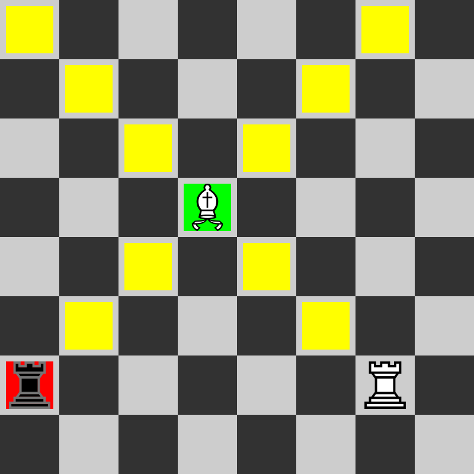The queen combines the moves of the bishop and the rook, being able to move on all the squares of the same row, of the same column or of the same diagonals, provided that there are no pieces (allies or opponents) between the arrival square and the starting square; and provided that the arrival square is not occupied by a piece of the same alignment.
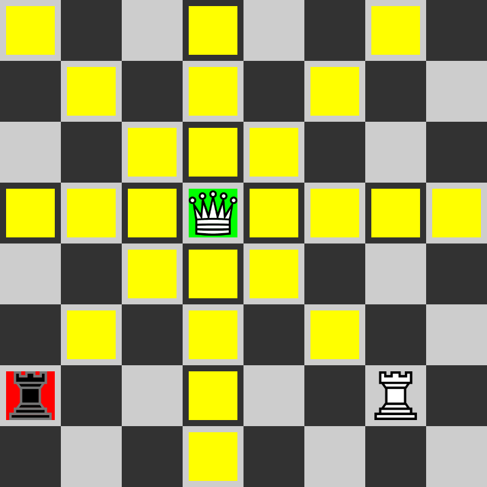The knight moves in an "L" shape, that is, it moves either two squares horizontally and one square vertically or one square horizontally and two squares vertically; all provided that the arrival square is not occupied by one of its own pieces. The knight can move even if there are other pieces in the way.
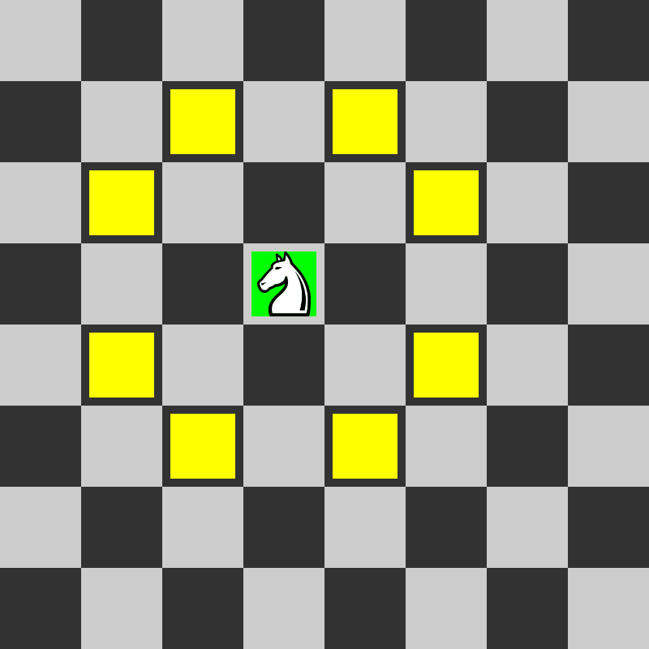The pawn is the most difficult piece in terms of movement. On its first move (i.e. when it is in its initial position) the pawn can move one or two squares further, as chosen by the player, provided that there are no pieces (allies or opponents) between the arrival square and the starting square and that the arrival box is free. In its subsequent moves, the pawn can only move one square at a time, provided that this square is free. Unlike other pieces, the pawn cannot go back. The pawn is also the only piece that captures in a different way than how it moves: it can capture an enemy piece only if it is on one of the two squares diagonally forward of its starting square, but it can neither move into those squares if they are free and neither capture the pieces that are in the squares in front of him.
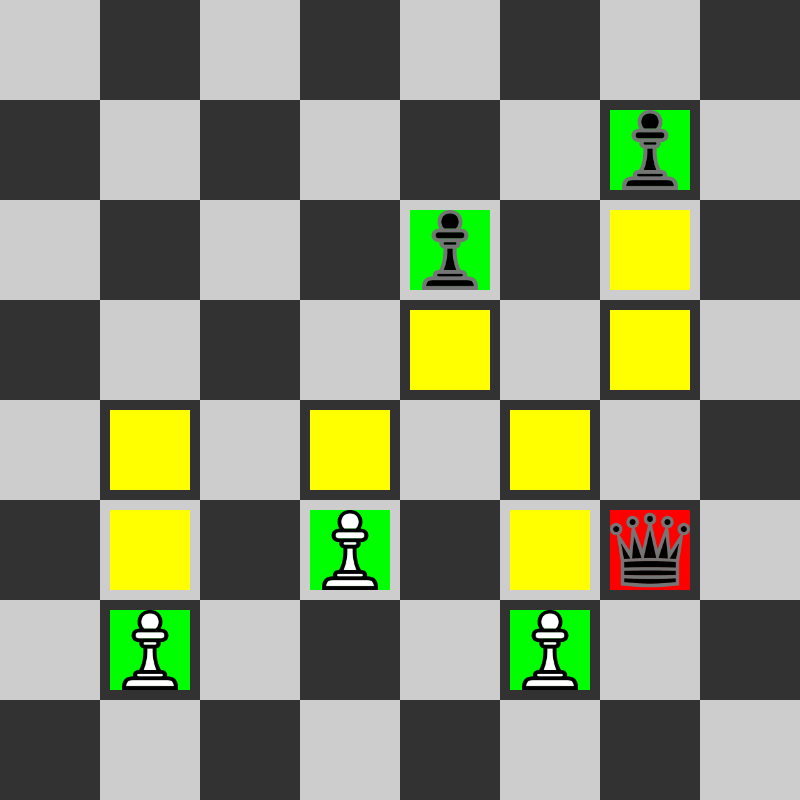The king is the most important piece in the game. It can never be captured, but only "threatened", in which case the king is said to be in check. The king can move to any square adjacent to him, provided that the arrival square does not have its own piece and that once it has arrived it is not in check.
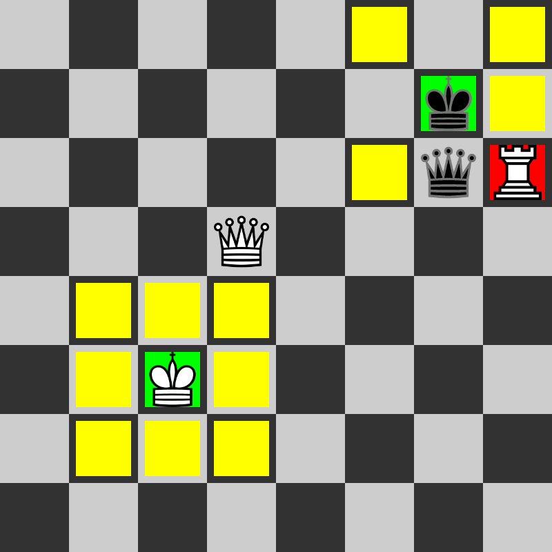
Castling is the only move that allows the king to move two squares.
To castling, the following conditions must be met:
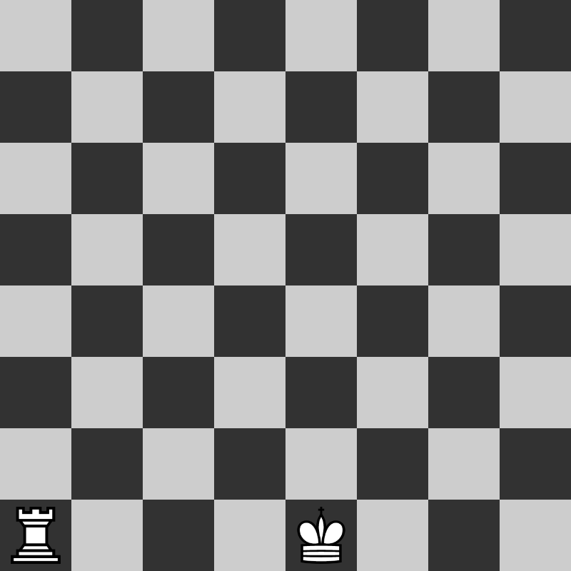 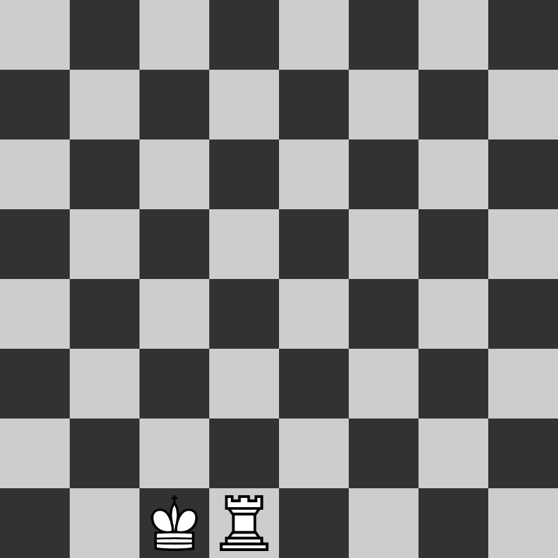
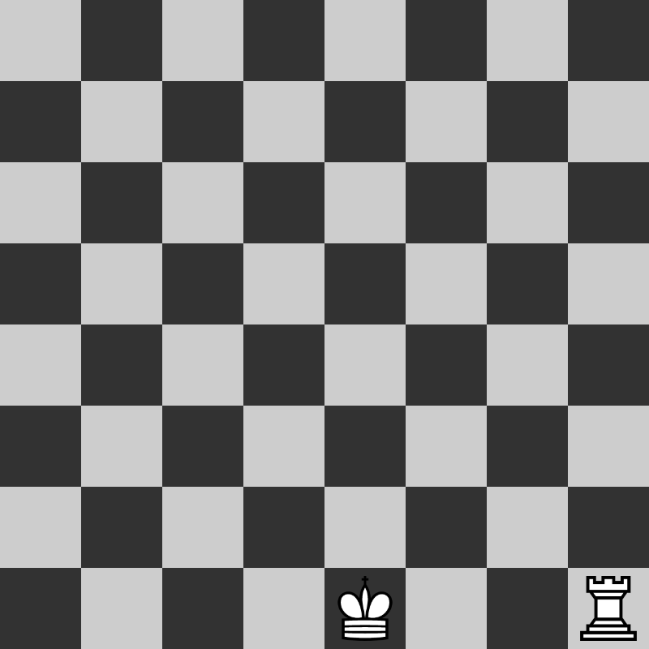 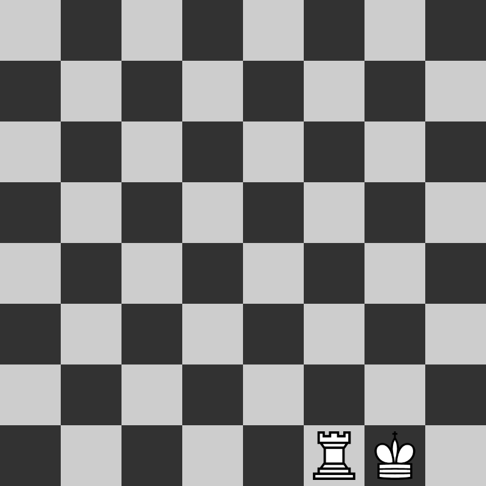
The en-passant is a special move made by the pawn.
To proceed with the capture, the following conditions must be met:
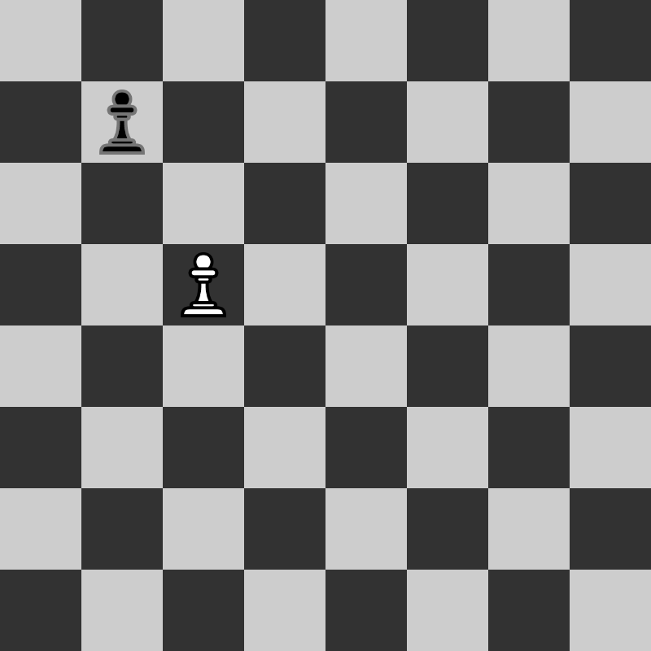 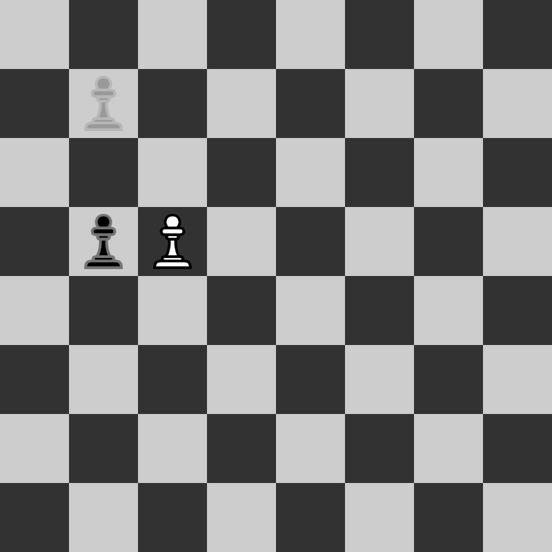 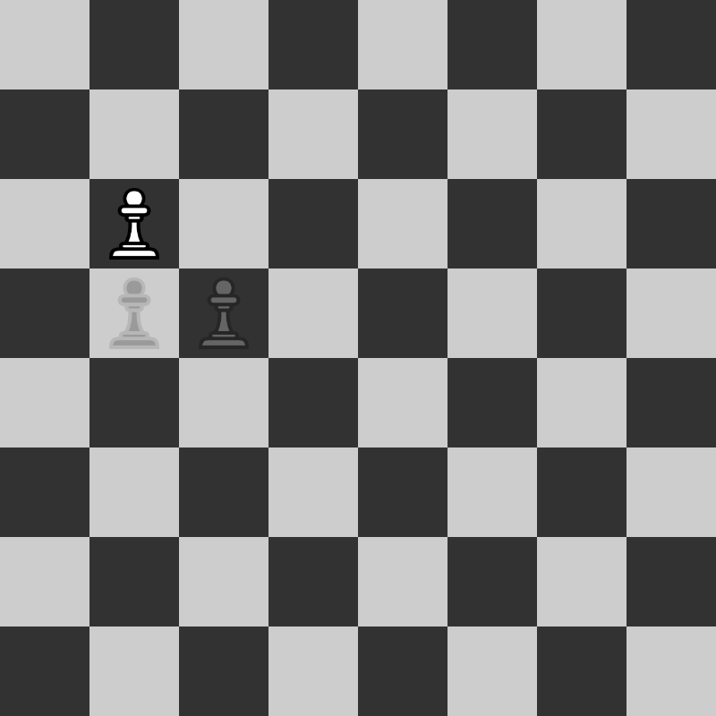
A pawn, when it reaches the end of the board, can be promoted to another piece.
A pawn can be promoted into one of the following pieces: